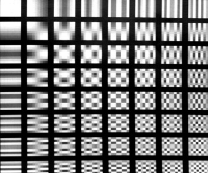
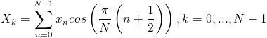
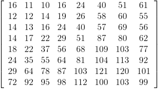
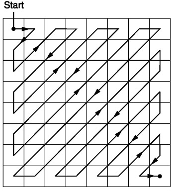
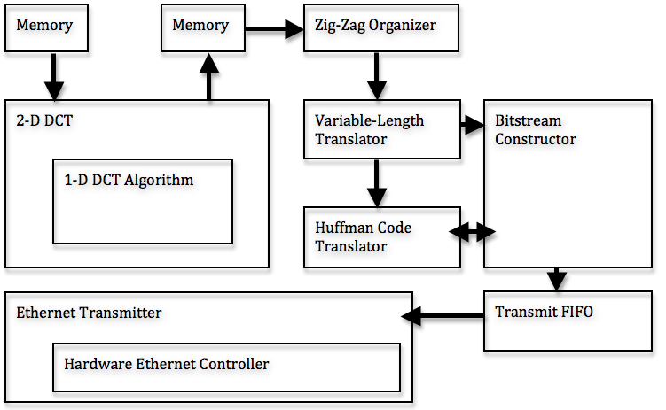
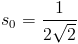
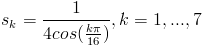
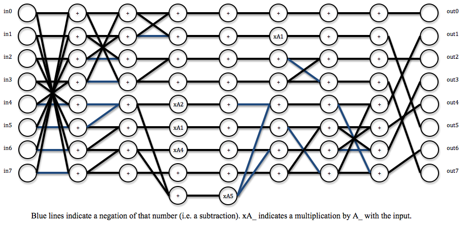
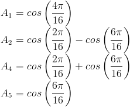

In this lab, we implemented JPEG compression and UDP Ethernet transmission on an FPGA. The idea was to take a single greyscale frame from the input of a video camera, encode it using the JPEG standard, and transmit it to another device (such as a computer) via Ethernet, all in hardware. This project exploits the speed of specialized hardware over software, and presents strict scheduling and control logic for the heavily modularized design.
The JPEG image compression standard is a lossy compression standard that uses the DCT transform and its associated properties to significantly reduce the number of bits used to represent an image. The encoding process involves many steps, which were broken down in our design as separable modules. Additionally, we incorporated ethernet and UDP communication implementations in our system.
The Discrete Cosine Transform (DCT) can represent a finite-length sequences of numbers as a summation of cosine terms of different frequencies, similar to how a Fourier transform represents periodic functions as a sum of sines at different frequencies. The DCT, and more specifically the DCT-II, is used for image compression because of its high energy compaction property. In short, most of the energy (or original information) can be compacted into a smaller number of bits.
To perform the first step of JPEG compression, the image in question is first split into 8x8 blocks of pixels. A 2-dimensional DCT is then applied to each 8x8 block. The results of a 2-D DCT represent the spacial frequency information of the original block at discrete frequencies corresponding to the index into the matrix. After the transform, the top-left coefficient gives spacial DC information, while the bottom-right coefficient gives the highest spacial frequency (in both the horizontal and vertical direction) information. The spacial frequency representation is shown in the figure below.

Notice the upper-left elements have lower spacial frequency both in the horizontal and vertical directions, while the lower-right elements have higher frequencies. With a DCT, most of the original information can be reconstructed from the lower frequency coefficients (the ones closer to the top-left), because of the high-energy compaction in those coefficients. Additionally, the human visual system is less perceptive to errors in high-frequency spacial content. These two facts together mean that errors in the low-frequency coefficients will be significantly more noticeable to human beings than errors in the high-frequency elements.
The 2-D DCT operation is separable, meaning it can be obtained by applying the 1-D DCT twice on the block being analyzed. The 1-D transform is performed first on each row of the block, then on the columns of the results of the row-wise transform. The 1-D DCT coefficients can be obtained using the following equation:

where k is the index of the coefficient. For the case of JPEG transforms, N always equals 8, since the transforms are applied to 8x8 blocks of the image.
Once the DCT is applied to the 8x8 block, a quantization factor is applied to the coefficients. This step, in short, discretizes the coefficients with step sizes related to the energy densities. Low-frequency coefficients are quantized with smaller step sizes, thus giving a smaller error than those quantized with larger step sizes. The low-frequency coefficients are quantized as such to reduce the likelihood of quantization errors. The higher frequencies are given larger step sizes thus reducing the accuracy in the less important elements. This is the lossy step in the compression process.

Though the JPEG compression standard does not specify a quantization matrix to use, this is one of the suggested matrices. To quantize the result of the 2-D DCT, the each coefficient is divided by the appropriate value from the matrix above and rounded to the nearest integer.
After quantization, the 2-D matrix is rearranged into a 1-D array. The elements are read in a fashion that gives the coefficients with high energy density first. The sequencing is done in a zig-zag method such that coefficients are arranged in an increasing spacial frequency order. Using this method, the more important coefficients appear earlier on in the series, while the less important ones appear later on.

Given that high frequency coefficients were quantized using a larger step size, the likelihood that those coefficients are zero is much higher than for the low-frequency coefficients. This groups the candidates for zero-valued coefficients, allowing us to assume the possibility a series of zeros.
The main source of compression for the JPEG standard is in the variable-size and run-length encoding. This step in the compression uses a combination of Huffman encoding and variable length encoding. Each non-zero coefficient is translated into a variable length bit-string, or code. The code contains information in both its number and its length (i.e. 0 is different from 00).
As mentioned before, the zigzag organization increases the likelihood of consecutive zeros, especially near the end of the array. To avoid sending consecutive zeros, a run-length of preceding zeros is encoded into the translation of each non-zero coefficient. Every non-zero coefficient is encoded as the variable length code, and a "header" Huffman code that indicates the preceding zero-run, and the length of the VL code. The pixel translation tables and Huffman tables are shown here. These translation tables only apply to luminance values for an image. Since our system deals entirely with greyscale images. There is a different translation scheme for chrominance values that are used on color images.
Since Huffman codes are uniquely identifiable regardless of length, the zero-run and size of a new non-zero value can always be identified without knowing the length. Then, using the size given by the Huffman, the following VL bits can be extracted and translated back to the appropriate non-zero coefficient. The VL codes are not uniquely identifiable unless the length of the code is known prior.
DC Versus AC
The DC coefficient is encoded slightly differently from the AC coefficients. Since the DC coefficient will never have preceding zeros (the zeros do not carry over between blocks), the Huffman code reflects only the length of the VL code.
The DC coefficient is also encoded in a differential encoding method. Since the DC value is basically the average of all pixels in the 8x8 block, DC coefficients among consecutive blocks will have a high likelihood of being similar (or the same). Instead of coding the absolute pixel value, the value is coded as the difference from the previous block's DC coefficient. For instance, if the first three consecutive blocks of the image had DC coefficients of 127, 127, and 128, respectively, the codes would be encoded as 127, 0, 1, respectively (the DC coefficient of the first block in the image is differentiated with 0, meaning its actual value is given).
Zero-Runs and End-of-Block Indicators
Note that the translation tables linked above do not have codes that accomodate zero-runs longer than 15. This is because after 15 zeros are encountered, a 15-run indicator is inserted instead of keeping track of longer streams. Any non-zero value with a preceding zero-run of more than 15 would be translated to this indicator, followed by the normal code where the zero-run is the number of zeros after the original 15. The indicator is shown in the table under the case for a zero-run of 15, and a VL size of zero.
The end of each block indicated by the Huffman code 1010. This code is not used for any other translation possibility, so it is used to indicate to the decoder that the end of the block has been reached.
In the Open System Interconnection Reference Model (OSI Model), Ethernet sits at the Link Layer and Physical Layer. At the Physical Layer, Ethernet describes how wires should interconnect. At the Link Layer, Ethernet specifies how an Ethernet frame should be formatted and how frames should be delivered. Delivery on Ethernet is best attempt only, meaning Ethernet attempts to deliver a message as best it can but cannot guarantee delivery.
Because Ethernet is inherently a broadcast protocol with potentially many devices connected to the same physical line, only one device may broadcast at a time. In case of collisions on the line, Ethernet controllers are able to detect the collision and perform random back off. Random back off simply means that upon collision detection, a random amount of time is waited before another send is attempted. An Ethernet frame consists of a Preamble, Start-of-Frame-Delimiter, MAC Destination, MAC Source, Ethertype, Payload, and Checksum.
The Preamble and Start-of-Frame-Delimiter are used in order to specify that an Ethernet frame is starting. Every Ethernet controller can be addressed using its Media Access Control (MAC) address. Thus, each Ethernet frame also contains MAC Destination and Source addresses. The Ethertype specifies what protocol to use when decoding the payload. The payload is the actual data, and the final Checksum is to make sure the Ethernet frame header is correct.
User Datagram Protocol (UDP) and the Internet Protocol (IP) reside on the next two layers of the OSI model at the Transport Layer and Network Layer respectively. The UDP/IP protocol, like Ethernet, does not guarantee reliable packet reception, only best effort delivery. The primary purpose of the IP protocol is to provide a layer of abstraction above the Link Layer. This way if the underlying Link Layer is not Ethernet, application level software does not need to be changed. The IP protocol provides this abstraction by having yet another pair of source and destination address, a fragmentation offset, a header checksum, and the protocol used in the payload.
The IP checksum is calculated as a the one's complement of the one's complement sum of all the 16 bit header values. The UDP protocol, which resides in the IP frame, actually tells the network stack how large the data is and what is the destination port. The UDP is the final layer of abstraction before the Application Level.
The code is heavily modularized, with outputs feeding into the inputs of the successive modules. The steps of the encoding are broken down into the following steps, each of which is implemented in a separate module: 1-D DCT, 2-D DCT/Quantization, zig-zag organization, VL translation, Huffman translation, and bitstream construction. This system considers a 256x256 image, but can be expanded to analyze more pixels. A dataflow diagram is shown below:

By considering only greyscale imaging, we used one third the amount of memory and processing power that would have been required by a color system. For a system to process color images, the entire compression process described above needs to be applied to each color channel individually. We originally obtained greyscale images by selecting only the green values of each pixel, instead of performing a conversion from RGB to YUV. This simplification is not exactly correct, but the emphasis of the project was not on the image, but rather the compression, so we did not feel the need to waste extra calculations on the converstion operation.
The 1-dimensional DCT is implemented using a fast algorithm that requires eight cycles to finish. The algorithm requires mostly successive additions of the inputs and resulting sums, with five multiplies occurring during three of the intermediate steps. This algorithm produces DCT results, which are scaled by some factor from the actual DCT results. However, the scale can be accounted for in the quantization step thus yielding the correctly quantized-transformed matrix. The scale factors for the coefficients are as follows:


The algorithm dataflow is shown in the figure below.


The module is fully pipelined, meaning new inputs can be fed at each cycle with new outputs coming out eight cycles later. This allows the module to more rapidly process blocks.
The 2-D DCT is a separable operation, meaning it can be obtained by applying the 1-D DCT on each of the rows of the 8x8 block, then applying it to the columns of the 8x8 block. This allows us to use the pipelined 1-D DCT to perform 2-D DCTs quite rapidly by feeding the rows of the block into the 1-D module for 8 cycles, then getting the results and feeding those columns back into the same module.
The quantization is also performed in this 2-D module, before the results are written back to memory. Because of the way the scaling for the algorithm combines with the quantization, the entire operation requires only shifts on the 2-D algorithm results.
The zig-zag organization is performed by simply reading the values out of memory in the appropriate order. The elements of a block are stored in an address that is obtained directly from the pixel's coordinates within the image. This output from memory is fed directly into the translator, at a rate of one pixel per cycle.
The translation from the pixel's quantized value to a variable length code is done using a lookup table. The table contains the value, and the length (in bits) of the code. These two values are then sent to a Huffman translator. The Huffman translator takes the preceding number of zeros and the size of the coefficient's code. These two numbers are fed to another lookup table that gives a Huffman code as "header" for the non-zero coefficient.
The VL code translation for DC and AC coefficients are exactly the same. The difference for DC and AC translations is in the Huffman code, so only the Huffman look up table needs to distinguish DC from AC pixels.
The outputs of the VL and RL translators are fed into a bitstream constructor that concatenates the appropriate bits to form a JPEG bitstream. This module essentially needs to keep track of the sizes of the Huffman and VL codes coming in and appropriately relay them to the 16-bit FIFO for the Ethernet transmitter.
The hardware Ethernet Controller is used to initialize the DM9000A controller chip, push data packets out to the DM9000A, grab received data from the DM9000A, and receive interrupts from the DM9000A. The Controller is largely written by Adam Shapiro but debugged by us.
The Controller is broken down into two separate state machines, one handling commands to and from the DM9000A (including interrupts) and another handling the transmit and receive sequences.
The transmit sequence involves:
1) Wait for the input FIFO to be not empty. Store the first value as the number of bytes in the payload.
2) Tell the hardware controller how many bytes will be stored including the Ethernet headers.
3) Send the Ethernet frame as data to the DM9000A.
4) Send the payload to the DM9000A.
5) Wait for transmit to finish through interrupts. Return to idle state.
Because we do not use the receive function, we will not describe the receive sequence here.
The UDP Wrapper utilizes Adam Shapiro's hardware DM9000A Ethernet Controller to produce valid UDP/IP headers and then send the payload data. Using First-In-First-Out data structure (FIFO), the UDP Wrapper first obtains the total number of bytes in the payload then obtains the payload 16-bits at a time. The Wrapper performs the following steps using a state machine to send out a single UDP packet:
1) Wait for input FIFO to not be empty. Store the first value as the number of bytes in the payload.
2) Tell the hardware controller how many bytes will be stored including the UDP/IP headers.
3) Send the Ethernet frame as data to the hardware controller.
4) Send the IP header as data to the hardware controller. IP checksum is calculated before the header is sent.
5) Send the UDP header as data to the hardware controller.
6) Send all data to the hardware controller.
Because the purpose of the UDP Wrapper is to allow the DE2 to communicate with a single computer directly connected by Ethernet, many values are hardcoded into the Verilog. Hardcoded values include the destination and source MAC addresses, the destination and source IP addresses, and the destination port. These four hardcoded values are all set to broadcast addresses, FF:FF:FF:FF:FF:FF for MAC addresses and 255.255.255.255 for IP addresses. The destination port is hardcoded to be an arbitrary 31373. Other values, such as the IP header checksum, are calculated on the fly simply because header values are not necessarily the same every time. Once finished, the control registers reset and returns to the waiting state.
Only M4K blocks are used in this project. M4K blocks are used because of their speed, and ease of use since the idea was to have a real-time JPEG compressor. The first memory module, which holds the values that are fed directly from the camera, can hold up to 16 rows of 256 pixels (1 byte each). 16 rows are used to always have an 8 row buffer on which we perform the DCTs, and 8 rows that are ready to be overwritten by the camera.
At the output end of the DCT is another 256x16 element M4K module. The write end of this memory module feeds to the zig-zag unit, which simply reads out the values in the zig zag pattern by setting the address appropriately over time.
Finally, at the end of the bitstream constructor, there is a third FIFO that acts as a transmission FIFO for the Ethernet transmitter. This memory module would ideally be as large as possible, and since the JPEG compression should significantly reduce the number of bits for the image, we would be able to store the entire image in M4K blocks (which we couldn't do with the raw pixel stream).
This module runs the fast algorithm to calculate a 1-D DCT. This module is fully pipelined, and outputs the length-8 DCT results 8 cycles after the input is read. This module has 22 bit, fixed point (8 decimal bits) inputs and outputs. Though the pixels in memory are stored as 8-bit values, the numbers are extended to 22 to avoid overflow and to keep some accuracy with fractional values in intermediate steps of the transform.
To get the actual DCT from the results of the algorithm, the corresponding output must be multiplied by the s values given in the design section. This step is skipped in our system, however, because it is combined with the multiplication required in the quantization operation.
Problems: This module was fairly straightforward to implement, since it was really just five multiplications and a series of adds. Pipelining it was also straightforward, but the original module attempted to use shifts and summations as a replacement for the multiplications, which sometimes gave issues with the output values (but not always). Once we realized that there are no other modules that need multipliers, we decided to scrap the attempted optimization.
This module schedules the inputs and outputs that are being fed to the pipelined 1-D DCT algorithm. The output rdaddress determines the value that should be read from memory to get the appropriate row. The schedule of which block to read in depends on which X and Y value is being written to memory by the camera (dictated by currentX and currentY).
The input, q, is a 64 bit value representing a row of 8 pixels from memory. This input is split and fed into the appropriate 8 inputs of the dct_algorithm module. The intermediate matricies (after performing the 1-D DCT on the rows) are stored in registers as to hold more bits for higher precision. These registers then feed back into the 1-D DCT as columns to complete the 2-D DCT. These outputs are then scaled appropriately to account for the algorithm's scale factor, and to quantize the coefficients. The quantized values are then stored back into a separate M4K block.
Problems: Scheduling of when to latch register values and assign new inputs was the biggest problem for this module. The M4K blocks have specific timing requirements for when data is available. Additionally, storing to registers and storing to memory also took some tweaking.
This module simply controls the read address fed to the memory module to read out the matrix in a zig-zag pattern, as described in the Background section. The latch_dc output tells the top-level module to latch the outgoing value from memory because it is the DC value of that particular 8x8 block. This needs to be done to do the differential coding scheme for the DC coefficients, as described in the Background section.
This module translates the quantized pixel values to the appropriate variable length codes. The two outputs are the code (which must be output as a fixed-length value) and a size component that tells the next translation module which bits to take out of the code output. This is simply a implemented as a lookup table. This translation is the same for DC and AC coefficients.
This module is another lookup table, and gives the Huffman code, which acts as a prefix to each non-zero pixel. The dc input tells this module whether it is encoding a DC value, otherwise it assumes it is encoding an AC value. The two types of coefficients have different translation methods, as described previously (specifically because DC does not take zero-runs into account).
The Huffman code simply describes the number of preceding zeros, and the size of the value's VL code. The Huffman itself is also variable length, so the length must also be an output so the bitstream module can extract the appropriate bits. Note: The huffman_length output of this module is actually one less than the actual length, so this signal really signifies the highest valid bit in the 16-bit huffman signal (when counting from 0). This module is embedded in the bitstream buffer, which is described below.
The buffer takes the output from the Huffman translator and the variable-length translator, and feeds in the appropriate bits to a bitstream buffer that will eventually go out to be transmitted. The VL translator feeds in the size and code, which are fed to the Huffman translator (embedded inside this module). The module has a 64-bit buffer of bits into which the appropriate number of variable-length translated bits flows. The module keeps track of how many bits of the 64-bit register are actually valid and need to be transmitted.
This module also handles writing to the transmission FIFO. Once the bitstream buffer has at least 16 bits, a write line is asserted and the 16 bits are stored into the FIFO appropriately. This module also handles keeping track of zero runs, and attaches an End-of-Block (EOB) code when it sees that there are no more non-zero coefficients in the array.
Problems: This module had the most problems out of any for the translation process. Firstly, the process of appending zero-run information for runs longer than 15 elements proved to be slightly difficult, since the end-of-byte needed to be taken into consideration. We could not blindly insert a 15-run indicator since it was possible that the string of zeros ran completely to the end of the block, in which case the EOB code would need to be appended without any 15-run indicators. Additionally, scheduling of inputs and outputs from the translation modules, and any conditional signals were somewhat difficult to coordinate.
This module is fed bytes into its FIFO and constructs a UDP/IP header around the inputted data and sends it out using a state machine to the hardware Ethernet Controller.
To use you must:
1) Push the number of bytes of payload as the first piece of data.
2) Push the bytes of payload.
It is very important to have the correct number of bytes in the payload because the Wrapper uses this number to keep the its state machine in sync with the external state machine driving the Wrapper.
Most of the MAC address and IP values are also hardcoded in. While changing the MAC address is easy enough, changing the IP values also include changing the amount added to the IP layer checksum.
Currently the Wrapper has problems if it still requires to read from the FIFO but the FIFO is empty. It will continue to read from the empty FIFO and feed the garbage data to the hardware Controller.
At full blast, the UDP wrapper is able to transmit up to 8 megabytes per second.
The results of this project gave proof of concept, but the overall implementation could not be completed by the demonstration deadline.
The JPEG compressor, which was modularized into several interacting pieces, worked (to an extent) in simulation. Accuracy was not fully verified for variable data (i.e. when receiving frames from the video camera). The compressor came out of the original idea of performing motion JPEG video encoding. As such, the hardware is able to encode into a JPEG bitstream at a rate roughly equal to the rate that raw pixels are fed by the Terasic camera. We were pleased with the speed at which the compression could be performed, but when we tried to combine all modules together on the FPGA, we could not get anything to come out through the Ethernet.
We were able to prove that intermediate pieces of the design functioned almost correctly by completing two smaller systems:
1. Read a 16x8 block of pixels (greyscale) from M4K blocks, apply the 2-D DCT on each of the 8x8 blocks, and transmit the results through Ethernet using the UDP.
2. Read an 8x8 block of bytes (representing the results of a 2-D DCT) from M4K blocks, apply the VL/RL encoding on the block, produce a translated bitstream, and transmit the results through Ethernet using a UDP.
These two experiments proved that the pieces of our compressor work, but the control logic to combine all the modules together was faulty. Since the blocks read from memory in the experiments were preloaded, the results were known prior and compared to the bytes transmitted through Ethernet. The second of these experiments showed a bug in our huffman translation code. The zero-count for runs longer than 15 does not quite function correctly, however the translation of non-zero values was correct (for the particular test stream). Also, since the experiment was performed using known inputs (static memory at the beginning of the dataflow), the camera aspect of the project was entirely removed.
Modules:
1-D DCT Algorithm
2-D DCT
Zig-Zag Control
Variable-Length Code Translator
Huffman Translator
Bitstream Buffer
UDP Wrapper